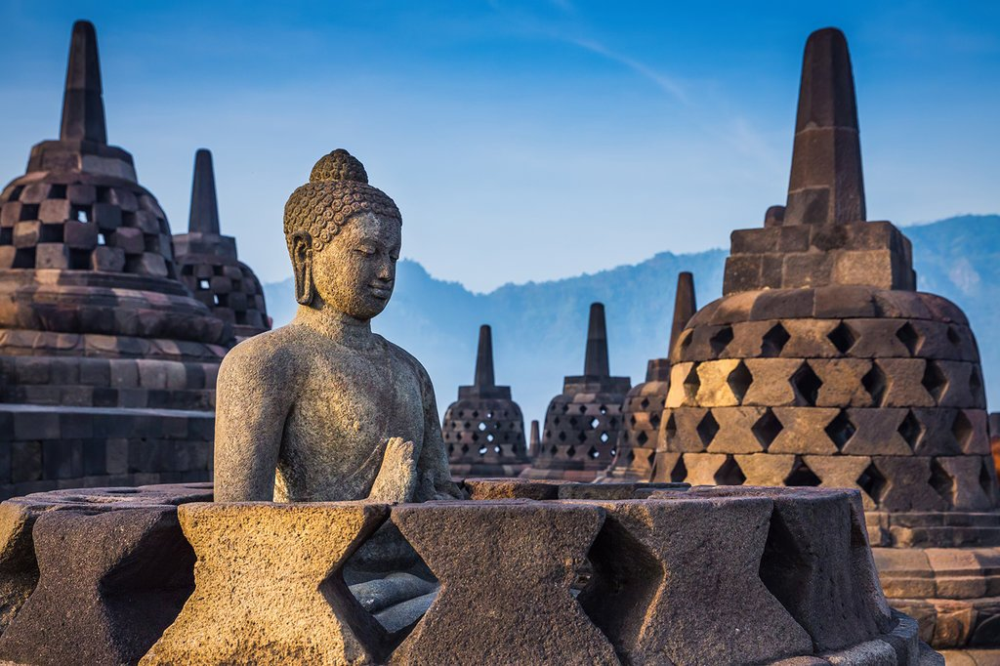

Gunung Merapi dengan ketinggian puncak 2.930 adalah gunung berapi di bagian tengah Pulau Jawa dan merupakan salah satu gunung api teraktif di Indonesia. Lereng sisi selatan berada dalam administrasi Kabupaten Sleman, Daerah Istimewa Yogyakarta, dan sisanya berada dalam wilayah Provinsi Jawa Tengah, yaitu Kabupaten Magelang di sisi barat, Kabupaten Boyolali di sisi utara dan timur, serta Kabupaten Klaten di sisi tenggara. Kawasan hutan di sekitar puncaknya menjadi kawasan Taman Nasional Gunung Merapi sejak tahun 2004.
Gunung ini memiliki potensi kebencanaan yang tinggi karena menurut catatan modern mengalami erupsi setiap dua sampai lima tahun sekali dan dikelilingi oleh permukiman yang padat. Sejak tahun 1548, gunung ini sudah meletus sebanyak 68 kali. Kota Magelang dan Kota Yogyakarta adalah kota besar terdekat, berjarak kurang dari 30 km dari puncaknya. Di lerengnya masih terdapat permukiman sampai ketinggian 1.700 meter dan hanya berjarak empat kilometer dari puncak. Oleh karena tingkat kepentingannya ini, Merapi menjadi salah satu dari enam belas gunung api dunia yang termasuk dalam proyek Gunung Api Dekade Ini (Decade Volcanoes).
Borobudur adalah sebuah candi Buddha yang terletak di Borobudur, Magelang, Jawa Tengah, Indonesia. Candi ini terletak kurang lebih 100 km di sebelah barat daya Semarang, 86 km di sebelah barat Surakarta, dan 40 km di sebelah barat laut Yogyakarta. Candi berbentuk stupa ini didirikan oleh para penganut agama Buddha Mahayana sekitar tahun 800-an Masehi pada masa pemerintahan wangsa Syailendra. Borobudur adalah candi atau kuil Buddha terbesar di dunia, sekaligus salah satu monumen Buddha terbesar di dunia.
Monumen ini terdiri atas enam teras berbentuk bujur sangkar yang di atasnya terdapat tiga pelataran melingkar, pada dindingnya dihiasi dengan 2.672 panel relief dan aslinya terdapat 504 arca Buddha. Borobudur memiliki koleksi relief Buddha terlengkap dan terbanyak di dunia.Stupa utama terbesar teletak di tengah sekaligus memahkotai bangunan ini, dikelilingi oleh tiga barisan melingkar 72 stupa berlubang yang di dalamnya terdapat arca Buddha tengah duduk bersila dalam posisi teratai sempurna dengan mudra (sikap tangan) Dharmachakra mudra (memutar roda dharma).
CANDI

BOROBUDUR
Taman Mini Indonesia Indah (TMII)
merupakan suatu kawasan taman wisata bertema budaya Indonesia di Jakarta Timur. Area seluas kurang lebih 150 hektare[1] atau 1,5 kilometer persegi ini terletak pada koordinat 6°18′6.8″LS,106°53′47.2″BT. Taman ini merupakan rangkuman kebudayaan bangsa Indonesia, yang mencakup berbagai aspek kehidupan sehari-hari masyarakat 26 provinsi Indonesia (pada tahun 1975) yang ditampilkan dalam anjungan daerah berarsitektur tradisional, serta menampilkan aneka busana, tarian, dan tradisi daerah. Di samping itu, di tengah-tengah TMII terdapat sebuah danau yang menggambarkan miniatur kepulauan Indonesia di tengahnya, kereta gantung, berbagai museum, dan Teater IMAX Keong Mas dan Teater Tanah Airku), berbagai sarana rekreasi ini menjadikan TMIII sebagai salah satu kawasan wisata terkemuka di ibu kota.
KERATON
Keraton (Bahasa Jawa: kraton atau karaton) adalah daerah tempat seorang penguasa (raja atau ratu) memerintah atau tempat tinggalnya (istana). Dalam pengertian sehari-hari, keraton sering merujuk pada istana penguasa di Nusantara. Dalam Bahasa Jawa, kata karaton (ke-ratu-an) berasal dari kata dasar ratu yang berarti penguasa. Kata Jawa ratu berkerabat dengan kata dalam Bahasa Melayu; datuk/datu. Dalam Bahasa Jawa sendiri dikenal istilah kedhaton atau kadhaton yang memiliki akar kata dari datu, di Keraton Surakarta istilah kedhaton merujuk kepada kompleks tertutup bagian dalam keraton tempat raja dan putra-putrinya tinggal. Masyarakat yang tinggal di dalam lingkungan keraton pada umumnya memiliki gelar kebangsawanan.
PANTAI PARANGTRITIS
adalah tempat wisata yang terletak di Desa Parangtritis, Kretek, Kabupaten Bantul, Daerah Istimewa Yogyakarta. Jaraknya kurang lebih 27 km dari pusat Kota Yogyakarta. Pantai ini salah satu destinasi wisata di Yogyakarta bahkan Pantai Parangtritis telah menjadi ikon pariwisata di Yogyakarta. Pantai Parangtritis mempunyai nilai simbolis yang merupakan garis yang bersifat magis yang menghubungkan Panggung Krapyak, Keraton Yogyakarta, Tugu Yogyakarta dan Gunung Merapi yang dikenal sebagai Garis Imajiner Yogyakarta.
Pantai yang terletak di sisi timur Pantai Parangkusumo ini memiliki legenda yang melekat dengan Ratu Kidul sebagai penguasa laut selatan dan keindahannya. Pantai ini merupakan pantai yang cukup luas di Yogyakarta, berbeda dengan pantai-pantai di kawasan Yogyakarta lainya seperti Pantai di Gunungkidul yang ukurannya relatif kecil.
CANDI PRAMBANAN
Candi Prambanan atau Candi Roro Jonggrang adalah kompleks candi Hindu terbesar di Indonesia yang dibangun pada abad ke-9 masehi. Candi ini dipersembahkan untuk Trimurti, tiga dewa utama Hindu yaitu Brahma sebagai dewa pencipta, Wisnu sebagai dewa pemelihara, dan Siwa sebagai dewa pemusnah. Berdasarkan prasasti Siwagrha nama asli kompleks candi ini adalah Siwagrha (bahasa Sanskerta yang bermakna 'Rumah Siwa'), dan memang di garbagriha (ruang utama) candi ini bersemayam arca Siwa Mahadewa setinggi tiga meter yang menujukkan bahwa di candi ini dewa Siwa lebih diutamakan.Kompleks percandian Candi Prambanan secara keseluruhan berada di wilayah provinsi Daerah Istimewa Yogyakarta, namun pintu administrasinya berada di Daerah Istimewa Surakarta (sekarang bagian Provinsi Jawa Tengah), hal ini yang membuat Candi Prambanan terletak di 2 tempat yakni di Desa Bokoharjo, Kecamatan Prambanan, Kabupaten Sleman, dan di Desa Tlogo, Kecamatan Prambanan, Kabupaten Klaten, atau kurang lebih 17 kilometer timur laut Yogyakarta, 50 kilometer barat daya Surakarta dan 120 kilometer selatan Semarang, persis di perbatasan antara Daerah Istimewa Yogyakarta dan Daerah Istimewa Surakarta.
KAWAH SIKIDANG
Kawah Sikidang merupakan lapangan perkawahan di Dataran Tinggi Dieng yang berada paling dekat dengan kawasan percandian Dieng, mudah dicapai, dan dinikmati karena terletak di tanah datar, sehingga juga menjadi kawah yang paling dikunjungi wisatawan. Tapaknya berada di Desa Dieng Kulon, Kabupaten Banjarnegara. Posisinya berada di sebelah timur dari Bukit Pangonan, berdekatan dengan Kawah Sibanteng dan Kawah Upas-Luwuk.
Kawah sikidang merupakan kawah aktif tersbesar yang ada di Dataran Tinggi Dieng. Kawah ini memiliki satu telaga air panas kecil dengan air yang selalu mendidih dan lapangan celah gas dengan titik-titik yang selalu berpindah-pindah di dalam suatu lapangan seluas lebih kurang 4 hektare. Dari karakter inilah namanya berasal, karena penduduk setempat melihatnya seperti kijang (kidang dalam bahasa Jawa) yang melompat-lompat. Dari sisi geologi, kawah ini tergolong muda. Catatan letusan freatik terakhir terjadi pada tahun 1981